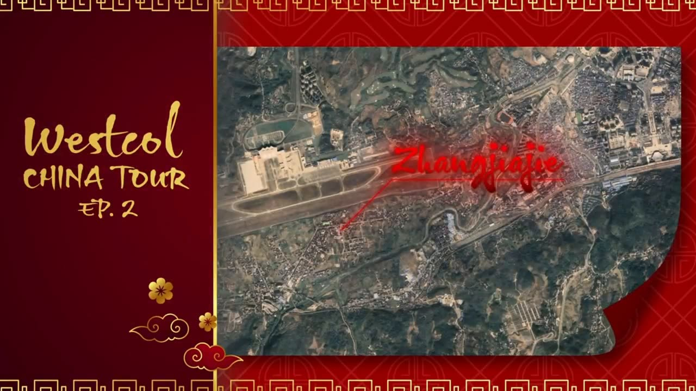

Destacado · YouTube
Westcol · China Tour EP.2
Un gancho que atrapa desde el primer segundo. Edición para Westcol, reconocido streamer y YouTuber, en uno de sus canales: apertura de impacto, intro con identidad propia y motion graphics que sostienen el ritmo. Aquí ves el inicio de un episodio de unos 30 minutos.